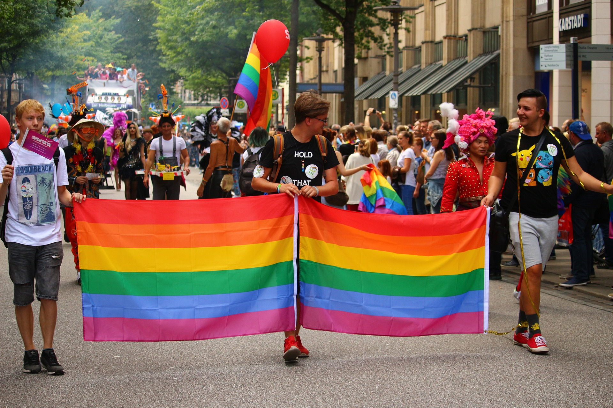

História do movimento LGBTQIA+

Como tudo começou?
O marco histórico que dá início ao movimento ocorreu no dia 28 de julho de 1969, no bar Stonewall Inn em Greenwich Village, Estados Unidos. Quando travestis, gays, lésbicas e drag queens enfrentam a polícia e dão início a uma rebelião que viria a gerar o movimento e luta pelos direitos dos Lgbtqia+ nos EUA e no mundo todo. Essa data é hoje comemorada mundialmente todos os anos como o dia do Orgulho Lgbtqia+. Esse episódio, conhecido como Stonewall Riot (Rebelião de Stonewall) durou exatos 6 dias e foi uma forma de retorno para as ações que a polícia tinha rotineiramente que promoviam batidas nos bares gays de Nova Iorque. 28 de julho é a data símbolo da luta e resistência da comunidade lgbt, mas também uma forma de celebrar as vitórias conquistadas durantes os anos.
O que é o movimento LGBTQIA+?
É um movimento civil e social que visa defender a aceitação de homossexuais na sociedade. Existem diversas organizações não-governamentais que atuam para oferecer apoio e representação para essa parte da sociedade. O movimento é composto por uma ampla rede de ativismo político e atuações culturais, também a famosa marcha ou “parada gay” que reúne milhares de pessoas todos os anos nas ruas do mundo inteiro. No começo do ano de 1988, ativistas começaram a utilizar a sigla LGBT nos EUA, ao longo dos anos as pessoas que se identificam como lésbicas, gays e transgêneros tinham o mesmo respeito entre a comunidade. Isso motivou outras organizações a adotarem novos nomes.